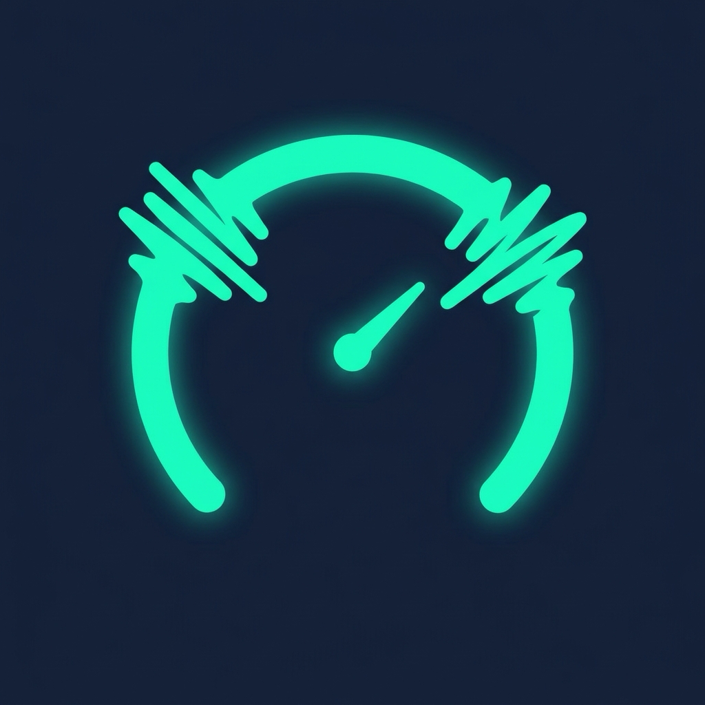

「話し方メーター」は、プレゼン・登壇・ウェビナー・営業デモの練習スピーチを録音して、話す速さ（話速）・フィラー（えー、あの、えっと などの口ぐせ）・間（ま）を数字で確認できる練習アプリです。録音を止めた瞬間に、話し方の型判定（例：焦り型）と3つのスコア（話速・フィラー・間）を表示します。
「早口かもしれない」「えー が多い気がする」と薄々感じている人が、自分の話し方を初めて客観的な数字で見るための「話し方の鏡」です。録音と解析はすべて端末内で完結し、音声が端末の外に出ることはありません。
録音・リアルタイム波形・録音後の型判定＋3スコア（1回90秒まで）は無料でご利用いただけます。買い切りの Pro（App内課金・サブスクリプションなし）では、フィラータイムラインと聞き返し・改善ドリル・語ラベル（対応端末）・履歴とトレンド・テキスト/PDF書き出し・無制限録音が解放されます。
ご質問・ご要望・不具合報告は、お問い合わせフォームよりお寄せください。
HanashikataMeter is a Japanese-language presentation-practice app. Record a practice speech and it instantly scores your speaking pace, filler words (“eh”, “ano”), and pauses — a mirror for how you actually sound. A colored live waveform shows pace and fillers while you speak; stopping the recording reveals your speaking-style diagnosis and three scores. Pro (one-time in-app purchase) unlocks the filler timeline with playback, tailored improvement drills, history & trends, text/PDF export, and unlimited recording length.
The app collects no personal data. Recording and analysis happen entirely on your device; audio never leaves it. Feedback is accepted only through the optional contact form below. See the Privacy Policy.